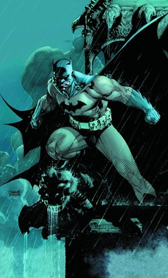

The Best Batman Movies According to Rishi

My top 3 movies of all-time.
The Dark Knight (2008)
 This was Christopher Nolan's second installment into his own Batman franchise. Typically, Nolan's films focus on characters with real conflicts embedded in realistc or modern frameworks This Batman mythos, a very urbanized realistic take, focuses on Batman and Commissioner Gordon who collectively try to curb the antics of a terrorist known as, The Joker.
This was Christopher Nolan's second installment into his own Batman franchise. Typically, Nolan's films focus on characters with real conflicts embedded in realistc or modern frameworks This Batman mythos, a very urbanized realistic take, focuses on Batman and Commissioner Gordon who collectively try to curb the antics of a terrorist known as, The Joker.
The Batman (2022)
This film, starring Robert Pattinson features a more silent Batman a far more gritty, tactical Gotham. Here, Batman confronts the city's underworld allied with the Penguin
Batman (1966)
I included this one because Adam West rocks!